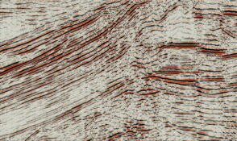
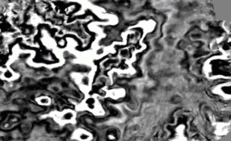
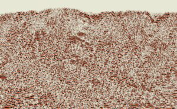
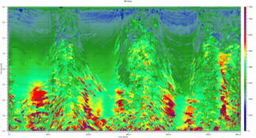
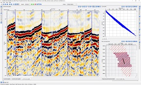
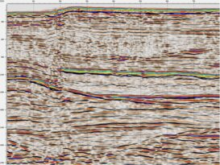
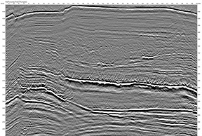
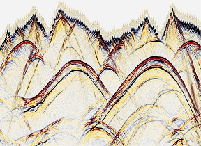

Low fold / Old Seismic
Legacy or low fold data can present significant problems in imaging and stratigraphic resolution. Using MultiFocusing a data driven geology based regularization can be applied to improve the spatial sampling of the dataset leading to greatly improved resolution and imaging

Sparse 3D / Footprint
Using MultiFocusing data regularization on sparse or irregularly sampled datasets can provide significant uplift in the gather and image quality. As well foot-print evident in conventional datasets can be significantly reduced by careful selection of the regularization method

Rough topography
Areas with rough surface topography are often characterized by near surface static issues and imaging problems. Using topographically referenced MultiFocusing the complex wavefields are easily solved allowing for substantial improvement in data quality

Complex velocity
Applying MultiFocusing not only gives its significant improvement in image quality, but analysis of the derived wavefield model gives accurate estimates of the true velocity model based on the geology and leading to a better imaged migration

Refraction statics
Complex geologic environments typically include complexity in the near surface. The near surface static solution provided by Geomage refraction statics is highly responsive to this near surface complexity, giving a clearer image of the subsurface

Marine data
MultiFocusing imaging brings into marine seismic processing wider frequency content, better resolution of stratigraphy and higher signal to noise ratio

Fault/Fracture detection
Finding fractures and its orientation can be a game changer in some projects. Geomage Diffraction Imaging exploits the diffraction energy inside the seismic data to generate enhanced diffraction volumes which can highlight fractured zones and fracture orientations within the target areas

Time/Depth imaging
In time or depth domain, high resolution prestack migration gives the best image especially when used in conjuction with MultiFocusing enhanced and regularized gathers and accurately estimation dip-corrected MF-RMS velocity